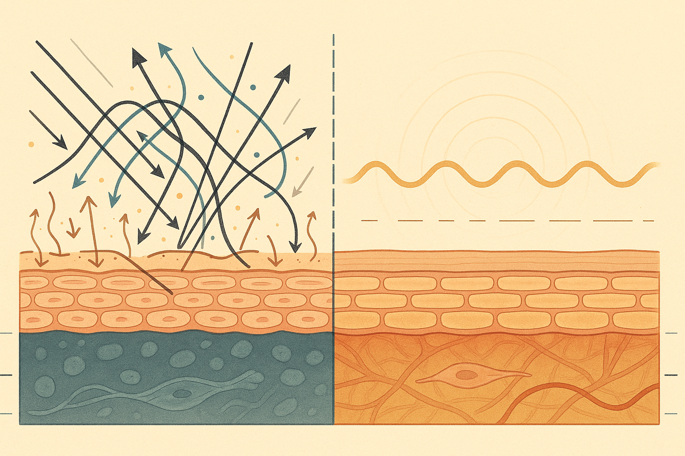
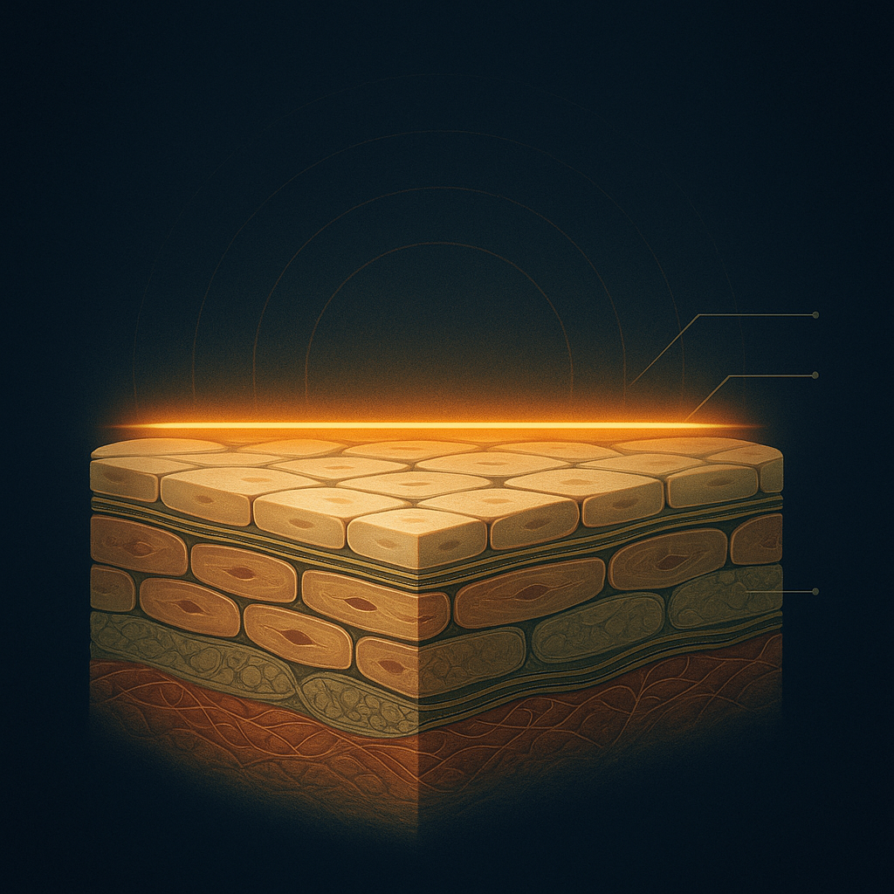
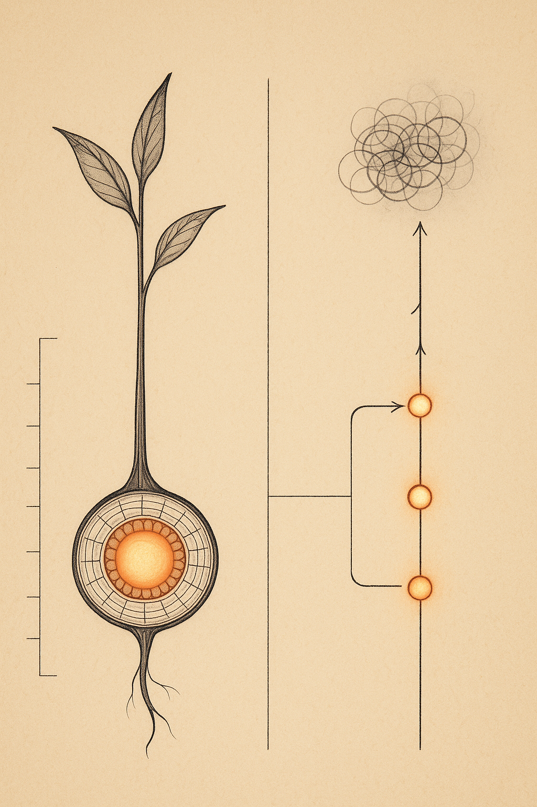

Review below. Reply approve to publish the Facebook post, or tell me edits.

You open the bathroom cabinet and there they are. The cleanser, the second cleanser, the toner, the essence, the serum you bought on a good day and used twice, the eye cream, the two moisturisers, the oil, the mask you keep meaning to get around to. Somewhere in there, quietly, a little voice starts counting. And counting is the wrong word for it, really, because it feels less like an inventory and more like a to-do list you are already failing.
Here is the thing worth saying out loud, gently and early, before any science: feeling behind on your skincare is a marketing problem, not a skin problem. Nobody was born owing their face eleven products a night. That backlog was sold to you, one hopeful bottle at a time. Your skin never signed the contract.
So this post is a swap-stories invitation more than a lecture. But it comes with a small, honest payload first, because a permission slip is worth more when you understand why you are allowed to use it.
Short answer: not on its own. A longer routine is not more results. It is more variables.
Every extra step is another ingredient, another chance of a reaction you cannot trace, another thing your skin has to get along with. Your barrier, the outermost layer that keeps water in and irritants out, does a surprising amount of its best work when it is largely left alone. Pile on enough well-meaning steps and you can end up nudging it in ten directions at once, then wondering why it looks unsettled.
We have written before about how skin responds to a small, steady signal repeated over weeks rather than a crowded regimen you abandon by week three, so we will not re-teach that here. The one-line version is enough: consistency with a little beats intensity with a lot, almost every time. A shorter routine you actually repeat quietly outperforms a perfect one you resent by Wednesday.
You do not need to overhaul anything. Just stand at the cabinet and sort, honestly, into two piles.
If this filter helped, send it to the friend with the eleven-step shelf. Consider it a permission slip she can screenshot and keep.
If there is room for one calm, low-effort addition, this is the one place we will mention what we make. Red light therapy is not another active you layer onto the skin. It adds nothing to the surface, so it costs your barrier no tolerance, no risk of clashing with the serum next to it. It is closer to sitting still for ten minutes a day than to another bottle. That is genuinely the whole pitch, and we would rather undersell it than dress it up.
To be plain about what it is and is not: this is a cosmetic device, not medicine. It does not cure or treat anything, and we make no medical or clinical claims. The realistic timeline does not come from our customers, it comes from published photobiomodulation research: in those studies, changes in tone and radiance tend to show up within roughly a week or two of consistent use, and softening in the look of fine lines is the sort of thing measured around the 4 to 8 week mark. And because we would rather you trusted us than believed us: Redermis is new, we are too new for before-and-afters we would stand behind, so judge us on the logic, not on a wall of reviews we are not going to invent.
A shorter routine you repeat beats a perfect routine you resent. That is the whole idea. Skin does not reward the size of your cabinet. It rewards showing up, gently, on the ordinary nights when you are tired and would happily skip the lot.
So doing less, kept consistently, is not laziness. It is often the more skilful choice. The step you quietly dropped may have been the one holding you back from staying consistent at all.
This is where you come in, because your answer might be the exact permission someone else scrolling needs tonight.
What is the one step you quietly stopped doing, and did your skin actually mind?
Tell us in the comments. The essence you ghosted, the double-cleanse you gave up, the seventh product you finally let go of. We suspect a lot of us are quietly relieved and not saying so.
And if you ever want a closer look, the mask and full spec are here. No rush. Your skin has more patience than the marketing gives it credit for.

Feeling behind on your skincare? That is a marketing problem, not a skin problem.
Somewhere along the way, skincare started to feel like homework. The steps you are apparently failing at. The shelf of half-used bottles. The quiet sense that everyone else is doing more, and doing it right.
Nobody was born owing their face eleven products a night. More steps is not more results. Your skin barrier does its best work when it is not being constantly disrupted, and the routine you actually repeat will always beat the perfect one you resent.
Fewer steps, kept. Not more steps, dropped.
If one thing stays, make it SPF. That is the step worth protecting.
For the record, we are new and still earning our reviews, so judge us on the logic. One low-effort thing we like is red light: 10 gentle minutes a day that adds nothing to the skin's surface. Cosmetic device, not medicine.
So, honestly: what is the one skincare step you quietly gave up, and did your skin even notice? Tell me below. (And tag the friend with the eleven-step shelf, she knows who she is.)
If you are curious, the mask and full spec are here: https://redermis.com.au/products/red-light-therapy-face-neck-mask
**Hashtags:** #skincaresimplified #skinbarrier #lessismore #skincareroutine #redlighttherapy #athomeskincare
**IMAGE PROMPT:** A Scientific American / New Scientist style conceptual science illustration: a clean editorial cross-section diagram of healthy skin strata rendered as calm, orderly horizontal layers (epidermis, a highlighted intact protective barrier line, dermis with softly drawn collagen fibres), the barrier layer shown smooth and undisturbed. Beside or above it, a small stylised diagram contrasting "many overlapping arrows disrupting the layers" versus "a single steady line", visualising the idea that less, kept consistent, protects the barrier better than more. Structured, legible, intelligent infographic aesthetic, muted warm neutral and soft botanical-green palette with subtle line-work. Absolutely no product, no mask, no device, no technology, no people, no faces, no text, no logos.

You are not behind on your skincare. You were sold more steps.
The guilt is manufactured. Feeling "behind" is a marketing problem, not a skin problem.
Your skin answers consistency, not quantity.
A barrier left mostly alone tends to do its quiet best work.
The shorter routine you actually repeat beats the ten-step one you abandon by Wednesday.
So keep the few that earn their place. Retire the rest without apology.
For us, one of the kept steps is a calm ten minutes with a light therapy mask: it adds nothing to the skin's surface, it is a cosmetic device, not medicine.
We are still earning your trust and your reviews, so judge it against everything above.
What is the one step you quietly dropped and did not miss? Tell me in the comments.
If you want a closer look, the link is in our bio.
**Hashtags:** #skinimalism #lessismore #skinbarrier #gentleskincare #skinlongevity #redlighttherapy #ledmask #australianskincare
**IMAGE PROMPT:** A vertical editorial science illustration in the style of Scientific American, New Scientist and Quanta: structured, intelligent, legible. Central metaphor of "less, kept consistently": a single elegant botanical stem shown in cross-section on the left, its cellular layers drawn as clean concentric strata glowing softly. To the right, a diagram contrasts two paths as fine linework: a tangled, overcrowded cluster of many small overlapping circles fading into grey, versus a single clear repeating line of three evenly spaced dots continuing steadily to the edge of the frame, brighter and more resolved. Warm neutral parchment background, deep ink linework, restrained accents of warm red and gold. Precise labelling-style tick marks and thin connector lines (but NO actual words or letters). Calm, premium, editorial. NO product, NO face mask, NO LED device, NO technology or gadgets, NO people, NO faces, NO text, NO logos.
**Title:** Red light therapy at home: the step I dropped
**Description:** Red light therapy at home with an LED face mask is one calm keeper, but feeling behind on your skincare routine is often a marketing problem, not a skin problem. A few things done consistently beat ten done once. The keepers tend to be daily SPF and one easy ritual like red light therapy, ten minutes a day. It adds nothing to the skin's surface. Cosmetic device, not medicine. Redermis is new and still earning its reviews. Save this for your next skincare reset.
**Link:** https://redermis.com.au/products/red-light-therapy-face-neck-mask
**Hashtags:** #RedLightTherapy #LEDFaceMask #LessIsMore #SkincareRoutine #AtHomeSkincare
Note: this pin reuses the Instagram image.